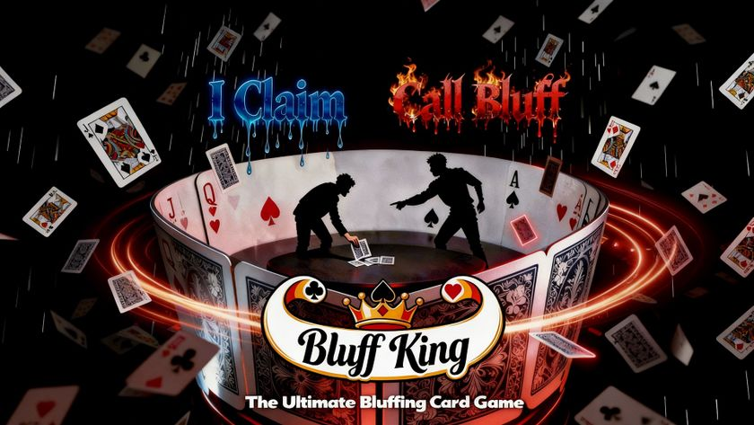
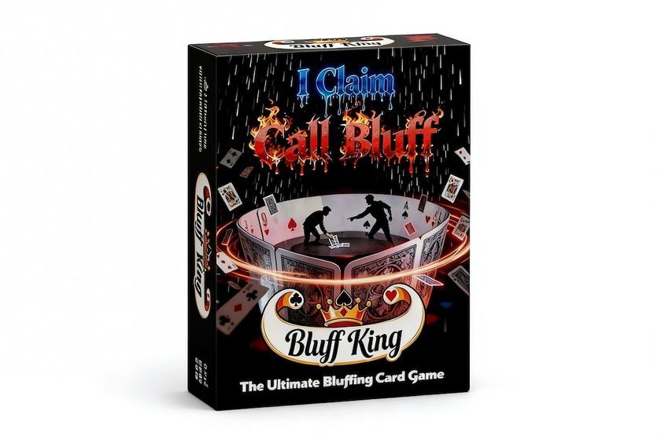

Bluff King
Board Game Arena 官方规则文档
Bluff King Game Rules
Overview
Bluff King is a classic bluffing card game for 2-8 players. Players take turns playing cards face down and making claims about their rank. Other players may either call bluff or keep adding cards. Claims can be true or false: outplay everyone, empty your hand first, and become the Bluff King.

Components
- Deck setup: 1 or 2 standard 54-card decks (including Jokers), chosen in game options.
- Wild cards: Both Jokers are wild and can represent any rank from A to K.
Objective
Be the first player to get rid of all cards in hand and win as the Bluff King.
Setup
Shuffle and deal all cards as evenly as possible among all players. Randomly choose a starting player with the lead.
Turn Structure
Each round follows these phases:
1. Play and Claim
The player with the lead:
- Plays any X cards face down to the Play Area.
- Declares a claim in the form: "X x Y" (where Y is any rank from A to K).
The claimed rank does not need to match the real cards. Bluffing is the core of the game.
2. Response Phase
After the claim is made, other players respond. The flow depends on the game option When can you add cards?:
Mode A: Immediately on your turn (default)
Starting from the next player in turn order, each player chooses one of three actions when it is their turn:
- Call Bluff: immediately trigger Challenge Resolution — the challenger reveals the claimant's most recently played set and resolves the challenge.
- Add Cards: play X cards face down and claim "X x Y". Y must match the current round rank; X can be any legal number. The adding player becomes the new claimant, and the next player's response begins immediately.
- Pass: take no action; move to the next player.
In short: each player acts immediately on their turn — challenge, add cards, or pass — without waiting for others.
Mode B: Only after no one calls bluff
After the claim, all other players first declare whether to call bluff simultaneously:
- Someone calls bluff → immediately trigger Challenge Resolution.
- No one calls bluff → proceed to the Add Cards phase: starting from the next player in turn order, each player may:
- Add Cards: same as above; after adding, all players again declare whether to call bluff on this new claimant.
- Pass: skip this opportunity.
In short: challenge declarations happen first; only after everyone passes can players add cards.
3. Challenge Resolution
When a challenge is called, reveal the claimant's most recently played set and resolve:
- Claim is false (bluff) → the claimant takes all cards in the Play Area; the challenger gets the next lead.
- Claim is true → the challenger takes all cards in the Play Area; the claimant gets the next lead.
After challenge resolution, the player with the lead freely chooses a new rank and starts the next round.
4. Round Settle
If all eligible players choose not to add cards (and no challenge is called):
- All cards in the Play Area are discarded.
- The last player who played/added cards keeps the lead and starts the next round with a freely chosen new rank.
Win Condition
At the end of each challenge resolution, the game checks victory:
The first player with 0 cards in hand wins immediately as the Bluff King.
All other players are ranked by remaining hand cards (fewer cards rank higher).
Important: even if a player appears to have emptied their hand, victory is only confirmed after challenge resolution. If that last play is challenged and proven false, that player takes the Play Area cards and the game continues.
Box Preview
